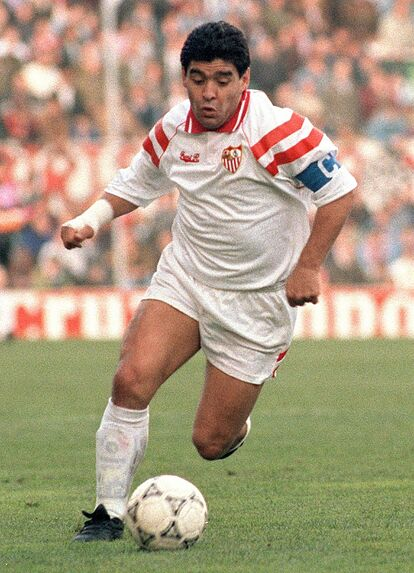

En primer lugar podemos encontrar a un jugador actual pero que dentro de poco se retirará del fútbol:

En segundo lugar hemos elegido a un jugador de la cantera al que siempre se le recuerda en el minuto 16:

Y en tercer lugar encontramos a uno de los mejores jugadores de la hisoria del fútbol
